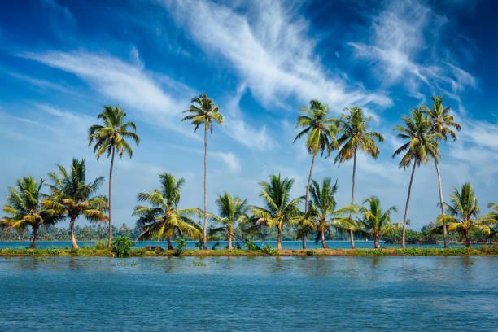
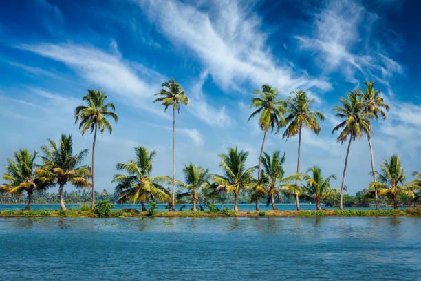
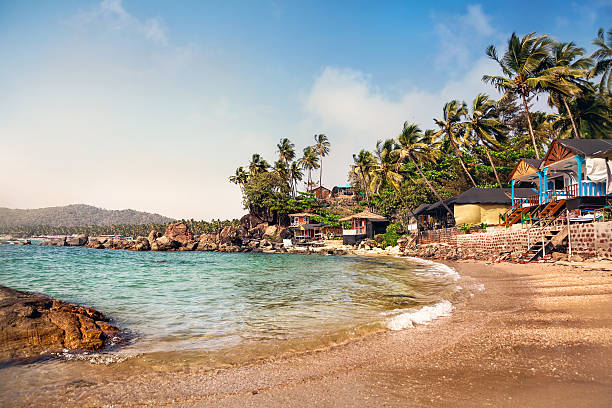
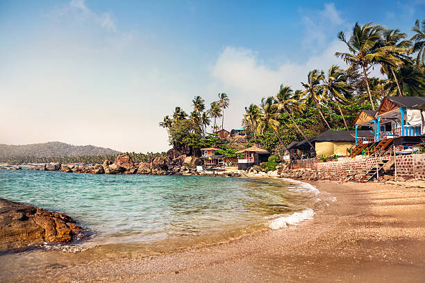
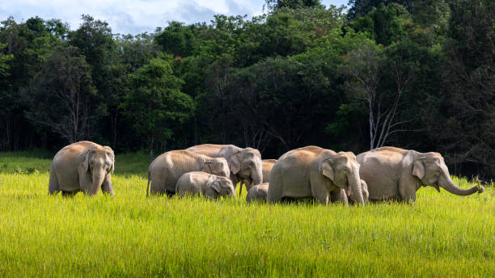
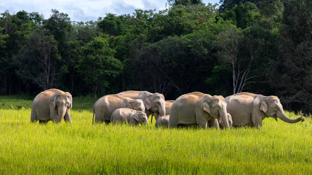

 


Kallarkutty dam is a part of the Neriamangalam Hydro Electric Project and is located at Kallarkutty. The reservoir of the Neriamangalam Hydro Electric Project is created by constructing a dam at Kallarkutty across the Muthirapuzha river.Hills Travelling along the winding roads of Kerala is always worth the sight that awaits you atop the height. Melt in the panoramic view of the valleys that will heal your mind and soul.Hills Travelling along the winding roads of Kerala is always worth the sight that awaits you atop the height. Melt in the panoramic view of the valleys that will heal your mind and soul.Hills Travelling along the winding roads of Kerala is always worth the sight that awaits you atop the height. Melt in the panoramic view of the valleys that will heal your mind and soul.


The sandy shores and calm ambience of Ponnani Beach make it an ideal getaway destination for families. The mighty light house offering a breathtaking view of the surroundings, adds an extra layer of beauty to this coastal haven.Hills Travelling along the winding roads of Kerala is always worth the sight that awaits you atop the height. Melt in the panoramic view of the valleys that will heal your mind and soul.Hills Travelling along the winding roads of Kerala is always worth the sight that awaits you atop the height. Melt in the panoramic view of the valleys that will heal your mind and soul.Hills Travelling along the winding roads of Kerala is always worth the sight that awaits you atop the height. Melt in the panoramic view of the valleys that will heal your mind and soul.


Fort Kochi, a town from the yesteryears, is a destination you wouldn't want to miss. Once a Portuguese, Dutch and British settlement, Fort Kochi is today a major part of the city of Kochi, drawing visitors from all over the world.Hills Travelling along the winding roads of Kerala is always worth the sight that awaits you atop the height. Melt in the panoramic view of the valleys that will heal your mind and soul.Hills Travelling along the winding roads of Kerala is always worth the sight that awaits you atop the height. Melt in the panoramic view of the valleys that will heal your mind and soul.Hills Travelling along the winding roads of Kerala is always worth the sight that awaits you atop the height. Melt in the panoramic view of the valleys that will heal your mind and soul.


 

A hidden gem that is every trekking aficionado's dream, Attukad waterfalls is one of the many spectacular destinations in Kerala. Located between Munnar and Pallivasal, this area is renowned for its long trekking route. With its endless trails filled with sparkling streams, scenic vistas, sightings of rare fauna and flora and the perpetually cool and refreshing air, every step taken here feels like a traversing though a living canvas filled with Nature's finest art work.Hills Travelling along the winding roads of Kerala is always worth the sight that awaits you atop the height. Melt in the panoramic view of the valleys that will heal your mind and soul.Hills Travelling along the winding roads of Kerala is always worth the sight that awaits you atop the height. Melt in the panoramic view of the valleys that will heal your mind and soul.